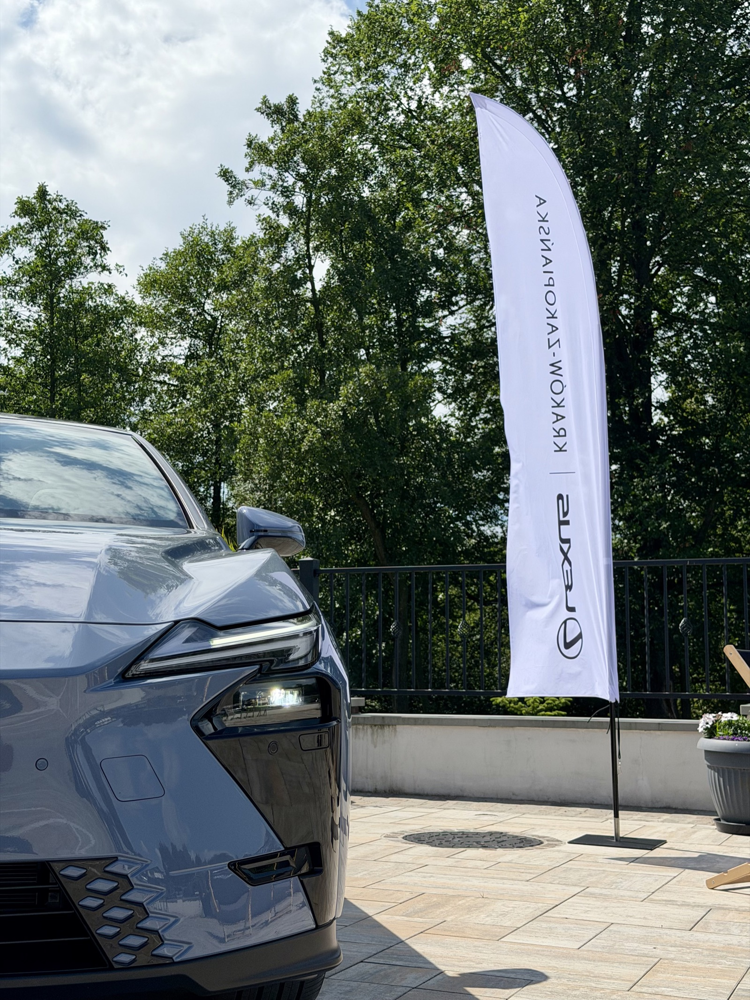
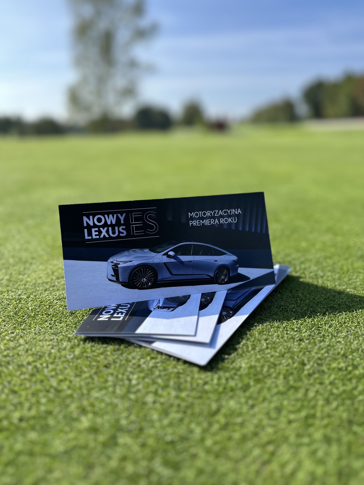
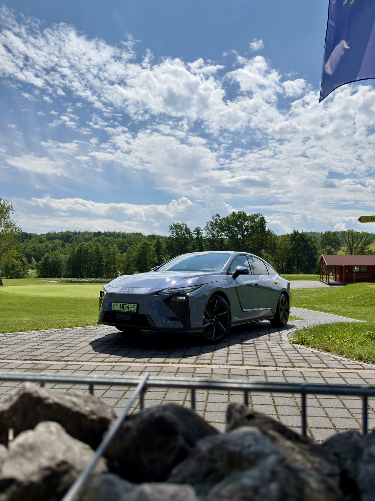
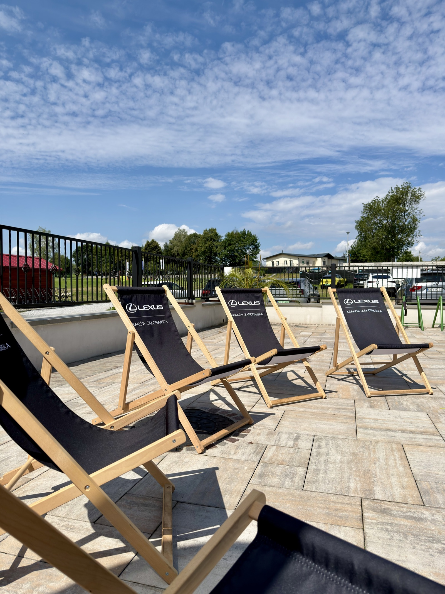
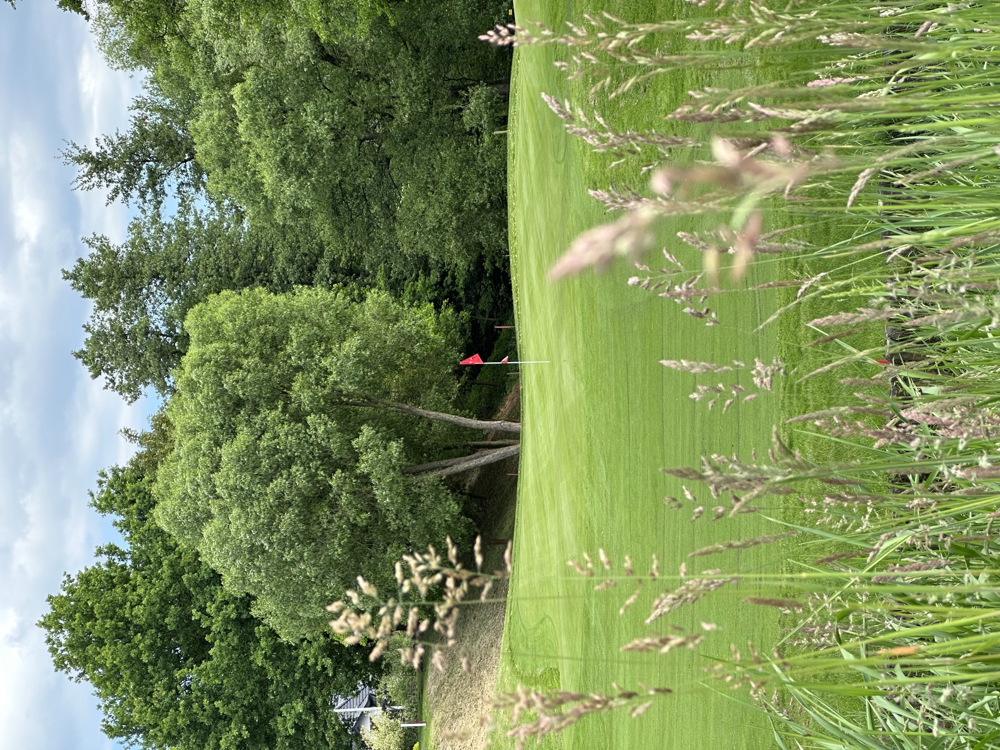
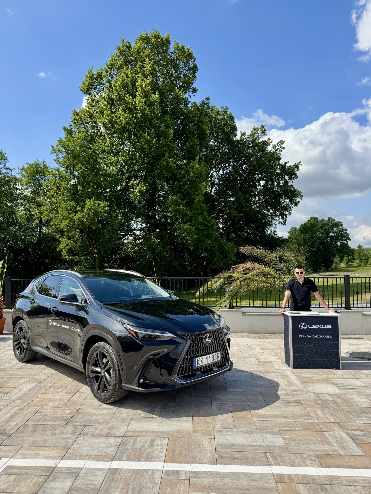

The tournament repeats several times each season, always at the same course: Royal Kraków Golf & Country Club. An established fixture on the calendar, not a one-off booking.
Lexus sponsors the prizes and takes a partner role in the event itself — not a logo on a banner, a presence on the course.
Cars stood at strategic points across the course and by the clubhouse — placed where players actually walked, not lined up in a row for photos.
Dealership staff worked the event without a sales script. No pitch, no forms to fill out to walk up and look at a car.
A test drive was there for anyone who asked. Nobody was asked if they wanted one.
And when the trophies were handed out, Lexus people were part of that ceremony — not spectators standing at the edge of it.






After the event, the dealer files a report. It counts what's countable: cars on site, test drives booked, leads collected.
It doesn't count the members who didn't take a test drive but noticed the car anyway. The regulars who've seen the Lexus cars at the club before and now expect them. The people playing a casual weekend round who are already the exact profile of buyer this brand wants — met on a day nobody was selling to them.
None of that fits in a spreadsheet. So none of it makes it to the next planning meeting.
The absence of a sales pitch isn't the absence of a strategy. It is the strategy. Approaching a member mid-round to ask about a test drive would break the one thing the event actually offers: an afternoon where nobody wants anything from you.
This isn't built to convert a stranger in one afternoon. It's built to maintain a relationship with people who were already going to be there — club members worth more to the brand over time than one campaign to a cold audience for one weekend.
And because it's the same tournament, the same course, often the same faces, the value compounds. A guest who keeps seeing the Lexus cars at the club carries a different relationship with the brand than one who saw them once. A report built to describe one event has no field for recurrence at all.
The honest answer isn't a bigger number for this year's report. It's a different report.
What could actually be tracked: whether attendees book a service appointment or a test drive in the months after the event, not on the day. Whether the same names return year over year, and whether that recurrence lines up with the dealer's own client list. Whether members who attend as guests eventually buy, lease or renew — on a timeline long enough that no single event could take credit for it alone.
None of that is a number this event can produce by itself. It's a number the dealer's own CRM could produce, if anyone connected the two.
This isn't a golf problem. It's a measurement problem.
Let's talk about measuring it →